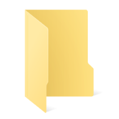

mouseGesture
これは何？
このファイルは、ティラノスクリプトにマウスジェスチャー機能を実装するプラグイン
「mouseGesture」の説明書です。
このプラグインを導入すると、マウスのボタン３つ（左/ホイール/右）に対してそれぞれ、
次の５つのケースのアクションを設定できます。
- 一度ボタンを押し込んだあと････
- 上に一定量動かしたときのアクション
- 右に一定量動かしたときのアクション
- 下に一定量動かしたときのアクション
- 左に一定量動かしたときのアクション
- どの方向にも一定量動かさずに結局ボタンを離したときのアクション
３ボタン×５ケースで１５個のアクションを設定可能です。
さらに、同梱しているコンフィグファイルを導入すれば、
ユーザーにカスタマイズしてもらうこともできます。
注意！：ボタンにジェスチャーを設定する場合、
そのボタンをクリックした瞬間のアクション
（data/system/KeyConfig.jsで定義しているもの）は
お切りいただきますよう、お願いします。
（"right" : "hidemessage" などとなっているところを "right" : "" のようにすればＯＫです。）
収録内容
このパッケージには以下のファイルが収録されています。
プラグイン導入に必要なものはmouseGesture 以下のファイルだけです。
- マウスジェスチャー実装プラグイン
- scenario
- first.ks
- config.ks
- configMouseGesture.ks
- system
- others
- plugin
- mouseGesture
- config_title.png
- config_button.png
- config_map.png
- config_left.png
- config_center.png
- config_right.png
- init.ks
- init.js
- config.css
- config.js
- 説明書
導入方法
このプラグインを導入するには、次の操作をおこなってください。
なお、バージョンはスタンダードパッケージ ver4.53 を想定しています。
- 収録されているmouseGesture を、
プロジェクトフォルダの data/others/plugin に配置する。
（others ごとドラッグ＆ドロップして統合すればＯＫです。）
- first.ks の適当なところに
[plugin name=mouseGesture] を記述する。
- コンフィグもあわせて導入する場合は、次の操作を行う。
- configMouseGesture.ks を
プロジェクトフォルダの data/scenario に配置する。
- data/scenario にあるconfig.ks を下の例のように改造する。
改造例
first.ks
;一番最初に呼び出されるファイル
[title name="ティラノスクリプト解説"]
;ティラノスクリプトが標準で用意している便利なライブラリ群
;コンフィグ、CG、回想モードを使う場合は必須
@call storage="tyrano.ks"
;ゲームで必ず必要な初期化処理はこのファイルに記述するのがオススメ
@plugin name=mouseGesture
;メッセージボックスは非表示
@layopt layer="message" visible=false
;最初は右下のメニューボタンを非表示にする
[hidemenubutton]
;タイトル画面へ移動
@jump storage="title.ks"
[s]
config.ks
; ティラノスクリプト標準テーマプラグイン
;=========================================
; コンフィグ モード 画面作成
;=========================================
; メッセージレイヤ０を不可視に
[layopt layer=message0 visible=false]
; fixボタン消し
[clearfix]
; イメージ消去
[iscript]
$(".layer_camera").empty();
[endscript]
; メニューボタン非表示
[hidemenubutton]
[iscript]
tf.current_bgm_vol = parseInt(TG.config.defaultBgmVolume);
tf.current_se_vol = parseInt(TG.config.defaultSeVolume);
tf.current_ch_speed = parseInt(TG.config.chSpeed);
tf.current_auto_speed = parseInt(TG.config.autoSpeed);
tf.text_skip ="ON";
if(TG.config.unReadTextSkip != true){
tf.text_skip ="OFF";
}
[endscript]
; レイヤ1を可視に
[layopt layer=1 visible=true]
[cm]
; コンフィグ用の背景を読み込んでトランジション
[bg storage="../../tyrano/images/system/bg_config.jpg" time=100]
; 画面右上の「Back」ボタン
[button graphic="config/c_btn_back.png" enterimg="config/c_btn_back2.png" target="*backtitle" x=840 y=20]
; 画面右上の「→」ボタン
[button name="button_back" graphic="config/arrow_next.png" target="*go_config_gesture" x=740 y=30]
[jump target="*config_page"]
*config_page
;かなり横長なスクリプトになってしまったのでマクロにしたほうがスッキリします
;c_btn.png は 4×4px の完全透明な画像です。width.heightを使って拡大しています
;一部のスマホブラウザでは音量変更に対応していないのでご留意ください
;------------------------------------------------------------------------------------------------------
;▼BGM音量
;------------------------------------------------------------------------------------------------------
;BGM音量-1０
[button name="bgmvol,bgmvol_10" fix="true" target="*vol_bgm_change" graphic="config/c_btn.png" width=35 height=35 x=300 y=170 exp="tf.current_bgm_vol = 10"]
;BGM音量-20
[button name="bgmvol,bgmvol_20" fix="true" target="*vol_bgm_change" graphic="config/c_btn.png" width=35 height=35 x=340 y=170 exp="tf.current_bgm_vol = 20"]
;BGM音量-30
[button name="bgmvol,bgmvol_30" fix="true" target="*vol_bgm_change" graphic="config/c_btn.png" width=35 height=35 x=380 y=170 exp="tf.current_bgm_vol = 30"]
;BGM音量-40
[button name="bgmvol,bgmvol_40" fix="true" target="*vol_bgm_change" graphic="config/c_btn.png" width=35 height=35 x=420 y=170 exp="tf.current_bgm_vol = 40"]
;BGM音量-50
[button name="bgmvol,bgmvol_50" fix="true" target="*vol_bgm_change" graphic="config/c_btn.png" width=35 height=35 x=460 y=170 exp="tf.current_bgm_vol = 50"]
;BGM音量-60
[button name="bgmvol,bgmvol_60" fix="true" target="*vol_bgm_change" graphic="config/c_btn.png" width=35 height=35 x=500 y=170 exp="tf.current_bgm_vol = 60"]
;BGM音量-70
[button name="bgmvol,bgmvol_70" fix="true" target="*vol_bgm_change" graphic="config/c_btn.png" width=35 height=35 x=540 y=170 exp="tf.current_bgm_vol = 70"]
;BGM音量-80
[button name="bgmvol,bgmvol_80" fix="true" target="*vol_bgm_change" graphic="config/c_btn.png" width=35 height=35 x=580 y=170 exp="tf.current_bgm_vol = 80"]
;BGM音量-90
[button name="bgmvol,bgmvol_90" fix="true" target="*vol_bgm_change" graphic="config/c_btn.png" width=35 height=35 x=620 y=170 exp="tf.current_bgm_vol = 90"]
;BGM音量-100
[button name="bgmvol,bgmvol_100" fix="true" target="*vol_bgm_change" graphic="config/c_btn.png" width=35 height=35 x=660 y=170 exp="tf.current_bgm_vol = 100"]
;BGM音量-ミュート（音量=0）
[button name="bgmvol,bgmvol_0" fix="true" target="*vol_bgm_change" graphic="config/c_btn.png" width=35 height=35 x=780 y=170 exp="tf.current_bgm_vol = 0"]
;------------------------------------------------------------------------------------------------------
;▼SE音量
;------------------------------------------------------------------------------------------------------
[button name="sevol,sevol_10" fix="true" target="*vol_se_change" graphic="config/c_btn.png" width=35 height=35 x=300 y=220 exp="tf.current_se_vol = 10"]
[button name="sevol,sevol_20" fix="true" target="*vol_se_change" graphic="config/c_btn.png" width=35 height=35 x=340 y=220 exp="tf.current_se_vol = 20"]
[button name="sevol,sevol_30" fix="true" target="*vol_se_change" graphic="config/c_btn.png" width=35 height=35 x=380 y=220 exp="tf.current_se_vol = 30"]
[button name="sevol,sevol_40" fix="true" target="*vol_se_change" graphic="config/c_btn.png" width=35 height=35 x=420 y=220 exp="tf.current_se_vol = 40"]
[button name="sevol,sevol_50" fix="true" target="*vol_se_change" graphic="config/c_btn.png" width=35 height=35 x=460 y=220 exp="tf.current_se_vol = 50"]
[button name="sevol,sevol_60" fix="true" target="*vol_se_change" graphic="config/c_btn.png" width=35 height=35 x=500 y=220 exp="tf.current_se_vol = 60"]
[button name="sevol,sevol_70" fix="true" target="*vol_se_change" graphic="config/c_btn.png" width=35 height=35 x=540 y=220 exp="tf.current_se_vol = 70"]
[button name="sevol,sevol_80" fix="true" target="*vol_se_change" graphic="config/c_btn.png" width=35 height=35 x=580 y=220 exp="tf.current_se_vol = 80"]
[button name="sevol,sevol_90" fix="true" target="*vol_se_change" graphic="config/c_btn.png" width=35 height=35 x=620 y=220 exp="tf.current_se_vol = 90"]
[button name="sevol,sevol_100" fix="true" target="*vol_se_change" graphic="config/c_btn.png" width=35 height=35 x=660 y=220 exp="tf.current_se_vol = 100"]
;SEミュート
[button name="sevol,sevol_0" fix="true" target="*vol_se_change" graphic="config/c_btn.png" width=35 height=35 x=780 y=220 exp="tf.current_se_vol = 0"]
;------------------------------------------------------------------------------------------------------
;▼テキスト速度
;------------------------------------------------------------------------------------------------------
[button name="ch,ch_100" fix="true" target="*ch_speed_change" exp="tf.set_ch_speed=100" graphic="config/c_btn.png" width=35 height=35 x=300 y=290]
[button name="ch,ch_80" fix="true" target="*ch_speed_change" exp="tf.set_ch_speed=80" graphic="config/c_btn.png" width=35 height=35 x=340 y=290]
[button name="ch,ch_50" fix="true" target="*ch_speed_change" exp="tf.set_ch_speed=50" graphic="config/c_btn.png" width=35 height=35 x=380 y=290]
[button name="ch,ch_40" fix="true" target="*ch_speed_change" exp="tf.set_ch_speed=40" graphic="config/c_btn.png" width=35 height=35 x=420 y=290]
[button name="ch,ch_30" fix="true" target="*ch_speed_change" exp="tf.set_ch_speed=30" graphic="config/c_btn.png" width=35 height=35 x=460 y=290]
[button name="ch,ch_25" fix="true" target="*ch_speed_change" exp="tf.set_ch_speed=25" graphic="config/c_btn.png" width=35 height=35 x=500 y=290]
[button name="ch,ch_20" fix="true" target="*ch_speed_change" exp="tf.set_ch_speed=20" graphic="config/c_btn.png" width=35 height=35 x=540 y=290]
[button name="ch,ch_11" fix="true" target="*ch_speed_change" exp="tf.set_ch_speed=11" graphic="config/c_btn.png" width=35 height=35 x=580 y=290]
[button name="ch,ch_8" fix="true" target="*ch_speed_change" exp="tf.set_ch_speed=8" graphic="config/c_btn.png" width=35 height=35 x=620 y=290]
[button name="ch,ch_5" fix="true" target="*ch_speed_change" exp="tf.set_ch_speed=5" graphic="config/c_btn.png" width=35 height=35 x=660 y=290]
;------------------------------------------------------------------------------------------------------
;▼オート速度
;------------------------------------------------------------------------------------------------------
[button fix="true" name="auto,auto_5000" target="*auto_speed_change" exp="tf.set_auto_speed=5000;tf.text_auto=0" graphic="config/c_btn.png" width=35 height=35 x=300 y=340]
[button fix="true" name="auto,auto_4500" target="*auto_speed_change" exp="tf.set_auto_speed=4500;tf.text_auto=1" graphic="config/c_btn.png" width=35 height=35 x=340 y=340]
[button fix="true" name="auto,auto_4000" target="*auto_speed_change" exp="tf.set_auto_speed=4000;tf.text_auto=2" graphic="config/c_btn.png" width=35 height=35 x=380 y=340]
[button fix="true" name="auto,auto_3500" target="*auto_speed_change" exp="tf.set_auto_speed=3500;tf.text_auto=3" graphic="config/c_btn.png" width=35 height=35 x=420 y=340]
[button fix="true" name="auto,auto_3000" target="*auto_speed_change" exp="tf.set_auto_speed=3000;tf.text_auto=4" graphic="config/c_btn.png" width=35 height=35 x=460 y=340]
[button fix="true" name="auto,auto_2500" target="*auto_speed_change" exp="tf.set_auto_speed=2500;tf.text_auto=5" graphic="config/c_btn.png" width=35 height=35 x=500 y=340]
[button fix="true" name="auto,auto_2000" target="*auto_speed_change" exp="tf.set_auto_speed=2000;tf.text_auto=6" graphic="config/c_btn.png" width=35 height=35 x=540 y=340]
[button fix="true" name="auto,auto_1000" target="*auto_speed_change" exp="tf.set_auto_speed=1000;tf.text_auto=7" graphic="config/c_btn.png" width=35 height=35 x=580 y=340]
[button fix="true" name="auto,auto_800" target="*auto_speed_change" exp="tf.set_auto_speed=800;tf.text_auto=8" graphic="config/c_btn.png" width=35 height=35 x=620 y=340]
[button fix="true" name="auto,auto_500" target="*auto_speed_change" exp="tf.set_auto_speed=500;tf.text_auto=9" graphic="config/c_btn.png" width=35 height=35 x=660 y=340]
;------------------------------------------------------------------------------------------------------
;▼未読スキップ
;------------------------------------------------------------------------------------------------------
; 未読スキップ-OFF
[button name="unread_off" fix="true" target="*skip_off" graphic="config/c_btn.png" width=125 height=35 x=300 y=420]
; 未読スキップ-ON
[button name="unread_on" fix="true" target="*skip_on" graphic="config/c_btn.png" width=125 height=35 x=435 y=420]
;------------------------------------------------------------------------------------------------------
;▼コンフィグ起動時の画面更新
;------------------------------------------------------------------------------------------------------
; BGM音量・SE音量・テキスト速度・オート速度・未読スキップの順
; $(セレクタ).attr("src","画像ファイルの場所");
;※画像差し替え版を使用するときは c_set.gif を c_set.png に書き換えてね
[iscript]
$(".bgmvol_"+tf.current_bgm_vol).attr("src","data/image/config/c_set.png");
$(".sevol_"+tf.current_se_vol).attr("src","data/image/config/c_set.png");
$(".ch_"+tf.current_ch_speed).attr("src","data/image/config/c_set.png");
$(".auto_"+tf.current_auto_speed).attr("src","data/image/config/c_set.png");
if(tf.text_skip == 'OFF'){
$(".unread_off").attr("src","data/image/config/c_uts_off.png");
}else{
$(".unread_on").attr("src","data/image/config/c_uts_on.png");
}
[endscript]
[s]
;--------------------------------------------------------------------------------
; ジェスチャーコンフィグへ
;--------------------------------------------------------------------------------
*go_config_gesture
[cm]
[layopt layer=message1 visible=false]
[freeimage layer=1]
[clearfix]
[jump storage=configMouseGesture.ks]
;--------------------------------------------------------------------------------
; タイトルに戻る
;--------------------------------------------------------------------------------
*backtitle
[cm]
[layopt layer=message1 visible=false]
[freeimage layer=1]
[clearfix]
;コンフィグの呼び出しに sleepgame を使っているので、必ず awakegame で戻してやってください
[awakegame]
;===================================================
;★ボタンクリック時の処理
;===================================================
;--------------------------------------------------------------------------------
;▼BGM音量
;--------------------------------------------------------------------------------
*vol_bgm_change
[iscript]
$(".bgmvol").attr("src","data/image/config/c_btn.png");
$(".bgmvol_"+tf.current_bgm_vol).attr("src","data/image/config/c_set.png");
[endscript]
[bgmopt volume="&tf.current_bgm_vol"]
[return]
;--------------------------------------------------------------------------------
;▼SE音量
;--------------------------------------------------------------------------------
*vol_se_change
[iscript]
$(".sevol").attr("src","data/image/config/c_btn.png");
$(".sevol_"+tf.current_se_vol).attr("src","data/image/config/c_set.png");
[endscript]
[seopt volume="&tf.current_se_vol"]
[return]
;---------------------------------------------------------------------------------
;▼テキスト速度
;--------------------------------------------------------------------------------
*ch_speed_change
[iscript]
$(".ch").attr("src","data/image/config/c_btn.png");
$(".ch_"+tf.set_ch_speed).attr("src","data/image/config/c_set.png");
[endscript]
[configdelay speed="&tf.set_ch_speed"]
; テキスト速度サンプル
[position layer=message1 left=40 top=490 width=880 height=110 page=fore visible=true opacity=0]
[layopt layer=message1 visible=true]
[current layer=message1]
[font color="0x454D51"]
このスピードで表示されます
[iscript]
tf.system.backlog.pop(); // 上の「このスピードで表示されます」のテキストを履歴から削除
[endscript]
[wait time=2000]
[er]
[layopt layer=message1 visible=false]
[return]
;--------------------------------------------------------------------------------
;▼オート速度
;--------------------------------------------------------------------------------
*auto_speed_change
[iscript]
$(".auto").attr("src","data/image/config/c_btn.png");
$(".auto_"+tf.set_auto_speed).attr("src","data/image/config/c_set.png");
[endscript]
[autoconfig speed="&tf.set_auto_speed"]
[return]
;--------------------------------------------------------------------------------
;▼スキップ処理-OFF
;--------------------------------------------------------------------------------
*skip_off
[iscript]
$(".unread_off").attr("src","data/image/config/c_uts_off.png");
$(".unread_on").attr("src","data/image/config/c_btn.png");
tf.text_skip = "OFF";
[endscript]
[config_record_label skip=false]
[return]
;--------------------------------------------------------------------------------
;▼スキップ処理-ON
;--------------------------------------------------------------------------------
*skip_on
[iscript]
$(".unread_off").attr("src","data/image/config/c_btn.png");
$(".unread_on").attr("src","data/image/config/c_uts_on.png");
tf.text_skip = "ON";
[endscript]
[config_record_label skip=true]
[return]
KeyConfig.ks
/*
Ver4.50以降で有効
ティラノスクリプトの装置入出力に関する設定を行うファイルです。
<設定できるアクション>
save:セーブ画面を開きます
load:ロード画面を開きます
next:次の文章に移ります。左クリックの操作
menu:メニュー画面を表示します。
title:タイトルへ戻ります
skip:スキップを開始します
backlog:バックログを表示します
fullscreen:フルスクリーン切り替え
qsave:クイックセーブ実行
qload:クイックロード実行
auto:オートモード開始
hidemessage:メッセージ消去
関数を指定することもできます。
例えば、コンフィグ画面の表示などは、関数の中にsleepgameでコンフィグ画面のシナリオファイルを指定してください
function(){
//config呼び出し
TYRANO.kag.ftag.startTag("sleepgame", {storage:"config.ks"});
}
<キーボード指定方法>
キーコードと、そのキーが押されたときのアクションを配置します。
キーコードの調べ方は
http://shanabrian.com/web/javascript/keycode.php
上記サイトで実際にキーを押すことで対応する数字を取得できます。
ノベルゲームでよく利用すると思わえるキーコードを書いておきます。
32:space 13:Enter 17:Ctrl
<マウス操作>
right:右クリック
center:センターボタンをクリック
wheel_up:マウスホイールを上に上げたときの動作
wheel_down:マウスホイールを下に下げたときの動作
<ジェスチャー>
スマホやタブレット限定です。フリック操作などに対応して、システムを呼び出すことができます。
swipe_up_1 は例えば、画面の上方向にフリックした時の動作を指定できます。
この _1 の数字は指の数をしていできます。
なので、１本でのスワイプと２本でのスワイプの動作を分けたい場合にはそれぞれ
swipe_up_1 とswipe_up_2 を分けて定義すれば良いということです。
holdは 画面を一定時間タッチし続けたときに発動します。
*/
var __tyrano_key_config = {
//キーボード操作
"key" : {
"32" : "hidemessage", //Space
"13" : "next", // Enter
"91" : "skip", //Command(Mac)
"17" : "skip", //Ctrl (Windows)
"67":function(){ // c ボタン
//config呼び出し例 コメント化
/*
if (TYRANO.kag.tmp.sleep_game != null) {
return false;
}
TYRANO.kag.ftag.startTag("sleepgame", {storage:"config.ks"});
*/
}
},
//マウス操作
"mouse" : {
"right" : "",//"hidemessage", //右クリックの動作
"center": "menu", //センターボタンをクリック
"wheel_up" : "load", // ホイールをアップした時の動作
"wheel_down" : "save" //ホイールをダウンした時の動作
},
//ジェスチャー
"gesture" : {
"swipe_up_1" : {
"action" : "backlog"
},
"swipe_left_1" : {
"action" : "auto"
},
"swipe_right_1" : {
"action" : "menu"
},
"swipe_down_1" : {
"action" : "load"
},
"hold" : {
"action" : "skip",
}
}
};
その他
初期設定
各ジェスチャーのアクション、ジェスチャー感度などについて、
ユーザーの設定を読み込む前にあらかじめ決定しておく初期値を変更したい場合
init.js を編集してください。
[mgesture_tmp_on], [mgesture_tmp_off]
このプラグインを導入することで使えるようになるタグです。
[mgesture_tmp_on]タグを使うと、一時的にマウスジェスチャーの設定が
『あらかじめ定義しておいた別の設定』に切り替わります。
こちらの設定はプレイヤーが設定することはできません。
[mgesture_tmp_off]タグでもとにもどります。
なお、両タグともlog属性を持ち、log=trueを指定すると通知を出します。
免責事項
このプラグインを利用したことで生じた一切の損害について、
製作者は責任を負わないものとします。
連絡先
アラートやコンソールで警告が出てプログラムが止まる、
意図した動作をしない、といった症状が出た場合や、
何か要望がある場合はこちらのTwitterアカウントまでお知らせください。
@tempura17654
更新履歴
| 2017/07/09 |
[mgesture_tmp_on][mgesture_tmp_off]タグを追加しました。 |
| 2017/05/27 |
説明書の記述の一部誤りを修正。また、コンフィグ画面においてデバッグ用のコンソール出力が残っていたのを削除。 |
| 2017/05/27 |
配布開始 |